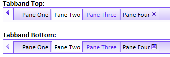

New CSS Style Builder
Table of contents
Introduction
Cascading Style Sheets (CSS) are a core Web technology that is used extensively in Alpha Five Web components. To quote Rachel Andrew (The CSS Anthology):"The basic purpose of CSS is to allow the designer to define style declarations (formatting details such as fonts, element sizes, and colors), and to apply those styles to selected portions of HTML pages using selectors — references to an element or group of elements to which the style is applied."
While CSS markup looks intimidating at first, it is actually fairly simple in principle. There's a small catch, however.
CSS can become complicated in practice when there are a large number of styles and selectors. The "Cascading" part of the name refers to the use of inheritance and overrides. You can use these to reduce the number of styles while still allowing for different appearance in different contexts, but when you do use them the order of their definition matters: the last override wins, so you want to order your style definitions from the most general selectors to the most specific selectors.
The new Style Builder introduced in Alpha Five Version 11 allows you to easily edit the Cascading Style Sheets that control the appearance of Alpha Five Web Components, such as the Grid and Dialog, using a graphical user interface, and also edit their associated icons. As you will see, you can quickly create variants of the supplied styles in different color schemes just by adjusting some sliders. The default order of the styles and selectors should just work, but you can change the order if you wish, in order to accomplish special effects. And of course if you wish to work with code, you can.
Understanding CSS selectors
A selector may have many forms. A type selector applies to a particular HTML element, for example a <p> tag:p { color: Black; font-family: Calibri, Tahoma, Arial; font-size: 10pt; }
A class selector applies to any element with a given class, for example a <p class="myClass"> tag:
.myClass { color: Grey; }
Note that a class selector name begins with a period. You will see many class selectors in the Alpha Five component styles.
The .myClass selector will apply to any HTML element with a class name of myClass, not just the <p class="myClass"> example we gave above. If you wanted a selector that only applied to <p class="myClass"> elements, you would combine the type and the class and call it p.myClass:
p.myClass { color: Blue; }
You will see a fair number of combined type and class selectors in the Alpha Five component styles, for example select.myTestStyleEdit.
The CSS specificity rule says that a more specific selector overrides a less specific selector; the CSS source order rule says that the last selector defined overrides previous definitions in case of a specificity tie. Using the three selector style definitions above, a <p> element will be black, a <p class="myClass"> element will be blue, and an <h2 class="myClass"> element will be grey.
HTML links can have multiple states: link (unvisited), visited, hover, and active (clicked on). CSS defines pseudo-classes for the <a> (anchor) tag to differentiate these states:
- :link
- :visited
- :hover
- :active
.<StyleName>Link:hover,
for example .myTestStyleLink:hover. A number of other pseudo-classes are defined by the CSS 3 standard; you can find them on the Insert menu of the Edit selector text, available from the Selector tab of the Manager pane.
Descendant selectors let you apply a class to a container, and have it apply to all elements of a given type or class inside the container. Here's an example:
p { color: Black; font-family: Calibri, Tahoma, Arial; font-size: 10pt; } .myClass p { color: Blue; }
Note that there's a space between .myClass and p in the definition.
Then we can have HTML that looks like this:
<div class="myClass"> <p>This paragraph will be blue.</p> <p>This paragraph will also be blue.</p> </div> <p>This paragraph will be black.</p>
You will find quite a few descendant selectors in Alpha Five Component Styles of the two-class variety. For example, you might see .myTestStyleEditBGError .myTestStyleEditBGEdit in the Edit group, for which the help would be:
The "Edit Button Group Error Edit" selector defines the style for the edit control portion of the edit button group when there is an error.
CSS also defines child selectors (.myclass>p), ID selectors, (#ID), and adjacent selectors (h2+p). As none of these are used in Alpha Five Component Styles, we won't belabor them here.
Starting the Style Builder
With the focus in the Web Projects Control Panel, choose the Edit|Web Components Style Sheets... menu item or the Open Web Style Builder icon on the Web Projects Control Panel.For the purposes of this exercise, from the action list, choose New Style from Template;
from the template list, choose Gradient and press Next >.
Making major adjustments
New Style from Template dialog starts with the Adjust dialog. Here you can set the colors for the major "color groups" of the style and icons.- Hue: Red primary at 0�, passing through the green primary at 120� and the blue primary at 240�, and then wrapping back to red at 360�.
- Saturation: Pure colors have 100% saturation, grays have 0% saturation
- Luminance: Pure colors have 0 luminance, tints have positive luminance, and shades have negative luminance
Adjust the color for the <Default> style color group
Pick Style in the top drop-down and select <Default> in the list box.In general, you should start with a Luminance of 0 and Saturation of 100%, and set your pure color Hue. Then make adjustments to the Saturation and Luminance until the samples in the 6 parts look generally the way you want.
Adjust the colors for the remaining style color groups
Go through all the remaining style color groups. You will quickly discover which group affects which items in the samples. You can use the Copy default color adjustments... button if you want to use the default color as a starting point for the current color group.Adjust the color for the <Default> icon color group
Note the color settings for your default style color group, switch the top dropdown to icons, pick <Default>, and enter the color settings from the default style. Adjust the settings as desired while viewing the samples that display icons.Adjust the color for the remaining icon color groups
As you did with styles, go through all the remaining icon color groups. As before, you can use the Copy default color adjustments... button if you want to use the default color as the setting or a starting point for the current color group. You may want to use different colors for Error and Warning icons than you use for the default icons, to make them stand out.Create the new style
Press the Create button. In the new dialog, enter a name that's appropriate for this style, pick local if you only want to use it in one project or global if you want to use it in multiple projects, and press the Create button. You cannot select system for styles you create from this tool; the system folder is reserved for styles distributed by Alpha Software.System styles starting with Gr are derived from the Gradient template. System styles starting with Mob are derived from the Mobile template.
The new Style Builder layout
At this point your new style will open in the full Style Builder. From here you can adjust anything in the styles or icons to your liking. You can even go back to the Adjust style colors dialog to change color groups. (Click on the image to see it full size in a new window.)
As you can see, there are four panels and two toolbars that go with the style builder. Clockwise from the lower left in the picture above, the panels are the Help panel, the Manager panel, the Edit panel, and the Assets panel. The larger of the two toolbars is the Main toolbar, and the smaller is the Design Mode toolbar. Panels and toolbars can be rearranged to your own liking.
The central Style Builder window has design and code tabs, and the drop-down at the top displays the same six parts we used when we were setting color groups.
As is usual in Alpha Five, the menus are context-sensitive. If you drop down the first five sub-menus when the Style Builder has focus, you will see that all the items relate to styles and the style builder. Many of the most-used menu items correspond to toolbar buttons.
The Help panel
The Help panel has two modes: Browse Help and Contextual Help. In Contextual Help mode you can pick Selectors or Icons in the Manager panel or the main Style Builder window and see how they are used in the Help panel.Clicking on the lock in the Help panel in browse mode freezes the current help, essentially disabling Contextual help. You can override the freeze by unlocking the lock or by explicitly switching the Help panel back to Contextual mode.
The Manager panel
Parts tab
The Parts Manager organizes the selectors into groups based on which parts of the components they style. The top-level groups are General, Controls, Grid, Menu, Window, and Pane Controls. These are the same parts as are listed in the Part drop-down used in the main Style Builder window and elsewhere. In the Parts Manager, many of these groups have sub-groups.Picking a selector in the Parts Manager causes the appropriate contextual help to be displayed in the Help pane, the appropriate sections of the main Style Builder window to be highlighted in red, and the appropriate properties or code to be displayed in the Edit pane. Bold selectors already exist in the current style. Clicking on the minus sign next to a bold selector deletes the selector from the style. Clicking on the back arrow in the main toolbar undoes the deletion.
Clicking on the blue question mark to the right of a selector brings up the appropriate help in the Help panel, in Browse mode.
A non-bold selector does not exist in the current style. Clicking on the plus sign next to the selector creates it in the current style. A red question mark in a circle to the left of a selector means that the selector is optional, and the style will display correctly even if it is undefined. In other words, omitting an optional style will have no negative effect on the appearance of the style.
A yellow exclamation point in a triangle to the left of a selector means that the selector is recommended to make the style render properly, but does not exist. Omitting a recommended style may sometimes have a negative effect on the appearance of the style, but will not always be noticeable.
Most of the Part names are fairly self-explanatory. On the other hand, the term "tabband", i.e. tab band, is a coined term; we use it to describe the scrollable band of tab controls at the top or bottom of a Tabbed User Interface.

Selectors tab
The Selectors tab of the Manager pane displays the names of all the defined selectors in the current style in source code order.In this tab you can display and edit selector properties and code, add selectors, remove selectors, edit selector text, merge multiple selectors, and split merged selectors. When you pick a selector, the properties will be displayed and the appropriate preview will be highlighted in red. You can also modify the source order of the selectors, if you're feeling bold.
The initial source order of the selectors in any style is the same as the order shown in the Parts tab. This order should work properly for any style supplied by Alpha Software. You are free to modify the order of the selectors as you see fit, but make a backup of the style.css file in your current style directory. (It's not a bad idea to zip the whole style directory before an edit.)
Don't try claim it's an Alpha Five bug if your customized order doesn't display as you expect: we'll just suggest that you undo your changes or revert to your saved CSS file. CSS styles are dependent on selector order, and it's not hard to break them by changing the order without thinking carefully about the override rules.
If you add a selector or edit selector text, you will see a dialog similar to this one. In the screen shot below we have activated the Insert menu and are looking at the pseudo-class sub-menu.

Icons tab
The Icons tab of the Manager pane displays the icons for the current style organized by the style Parts.From the Icon Manager, you can edit, import and replace, delete, and map icons. You can also edit the non-default icon color groups.
An Icon glyph of <None> means that the icon has not been defined. A red question-mark icon above the icon means that the icon is optional.
We saw icon color groups in use when we discussed making major color adjustments to a style.
Settings tab
The Settings table of the Manager pane allows you to adjust the padding and spacing of Grids, Grid Forms, Menus, and Windows in the current style, along with other settings that affect the appearance of the style but don't fall under the categories of CSS or icons.The Edit panel
The Edit panel allows you to edit the properties of the current selector in the current style two ways. You can use a property sheet:You can also edit the CSS code directly:
Note that a single Border Radius property generates three lines of CSS, to allow for the different requirements of the five web browsers we support. Also note that you can set the radii of different corners independently if you wish:
The Assets panel
The Assets panel lets you manage your style's colors and images.The color picker and the stylesheet, system, and custom palette color drop-downs can be used to search for colors in the style sheet. Assets can be selected and applied to selectors using the Asset dropper tool in the Design Mode toolbar.
The Color Groups button at the bottom of this dialog edits style sheet color groups (as opposed to icon color groups, which are controlled from the Icons tab of the Manager pane).
The Main toolbar
The main Style Builder toolbar provides a convenient way to access common operations on style sheets.
From left to right by group, the buttons are Open style, Save style, and Close style; Undo and Redo; Cut appearance from selected style(s), Copy appearance from selected style(s), Paste appearance on selected style(s), Clear appearance on selected style(s) with a drop-down to specify what to clear; Edit appearance style buffer...; Search the stylesheet; Open the current styles folder; Preview in browsers, with a drop-down to select browsers; Import from a Web style or a CSS file... and Export to a Web style or a CSS file...; Adjust style colors and Scale fonts in stylesheet; Generate style icons using the generate icon genie; and Make stylesheet legacy compliant. Most of these are self-explanatory; a few are not.
The Make stylesheet legacy compliant action adds style selectors that are compatible with V10 web style sheets. For example,
.test1Page { color: Black; font: 10pt Calibri, Tahoma, Arial; }
becomes
.test1Page, .test1PageBODY { color: Black; font: 10pt Calibri, Tahoma, Arial; }
Generate style icons using the generate icon genie allows you to selectively generate icons or groups of icons with a newly-defined HSL color. Adjust style colors allows you to selectively adjust the colors of CSS styles and/or icons from their current HSL values, for example adding some red to and decreasing the luminance and saturation of all the colors in a group to make them warmer and darker.
The Design Mode toolbar
The Design Mode toobar provides convenient access to settings and actions for the main style builder Design window. These buttons are disabled if you are viewing the Code window.The first two buttons are a toggled pair: they determine whether or not the Style Builder will present the full cascade of inherited selectors applying to the current element:
or just the current element and any associated pseudo-classes:
The third through fifth buttons are tools: the Select tool, the Appearance tool, and the Asset tool. The last button toggles the display of the current selection on the style sheet samples.
About the full cascade context menu
You'll recall from the Understanding CSS selectors section near the beginning of this article that Cascading Style Sheets use inheritance. The menus above demonstrate the choice between showing the full inheritance cascade and suppressing it.The Style Builder has a list of selectors that can be used, which may not necessarily be defined. When you click on an element in the design view, the Style Builder looks at that element and calculates all of the existing CSS selectors in the stylesheet that are effecting that element, and also checks a list of all possible selectors.
If there is more than one match in the stylesheet or there are matches to selectors that can be defined but haven't been, we present a menu.
In the case of multiple matches in the stylesheet we ask for clarification as to which you want selected. It would not be helpful to have the style builder automatically select both "Button" and "ButtonHover" when you click on the button showing the example of what the button looks like when you are mousing over it: you probably want to select one or the other.
If there are any selectors that the style builder knows you can create but haven't yet been created, it presents them as a list. If you click the desired entry, it will create that selector in the stylesheet. If you decide later that you don't want the selector, you can always delete the definition.
The main Style Builder window
The main Style Builder Design tab displays any one of the 6 parts of the style sheet. Here we are displaying the Controls part of the test1 style and have chosen the .test1Edit selector.The various tools in the Design Mode toolbar act on this window. At any time you can switch to the Code view to see the entire CSS source code for the style sheet.
Searching the stylesheet
When you search the stylesheet with Ctrl-F, the binoculars icon, or the Edit|Search... menu item, you are searching for a property value, not the name of a property or the name of a style. For example, in the screen shot below we are searching for the hexadecimal color #9a86d7:In the results, we can see that the color was found in a number of border-color and background-color properties. If we only wanted to change the color when it was used as a background-color, we could unselect all styles and then check only the background-color usages. Then we could enter a new color in the Replace with... box and click the Replace button.
After viewing the design, if we did not like the effect, we could always undo the change.
How to restore the default layout
If you accidentally close one or all of the panels associated with the Style Builder, you may find yourself unable to accomplish much in the way of style editing. Fortunately, there is an easy way to restore the default layout of the panels.With the focus in the Style Builder, pick the Panels|Restore default layout menu item. After a few seconds, all four panels should be visible and in their normal positions.